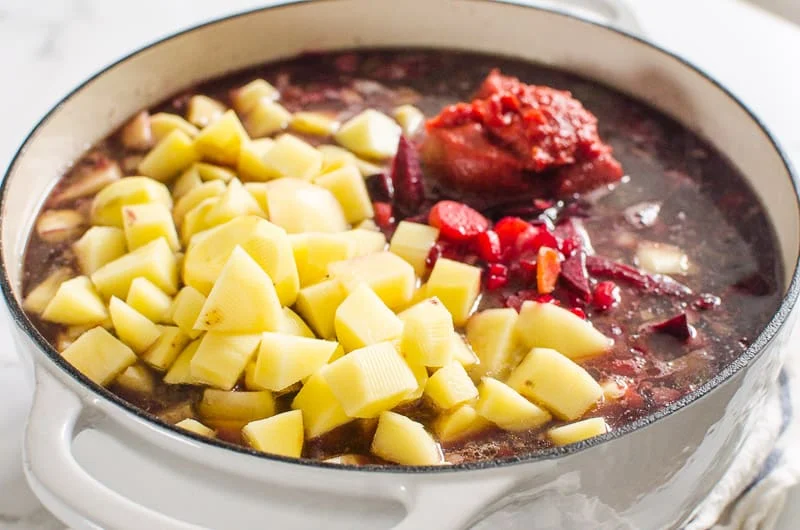

CUISINE
Ukraine

Ukrainian
Language
Explore the history, structure, and geographical dialects of the official language of Ukraine.


CULTURE
Explore the folk customs, clothing, and arts that have defined Ukrainian identity.

INTERESTING FACTS